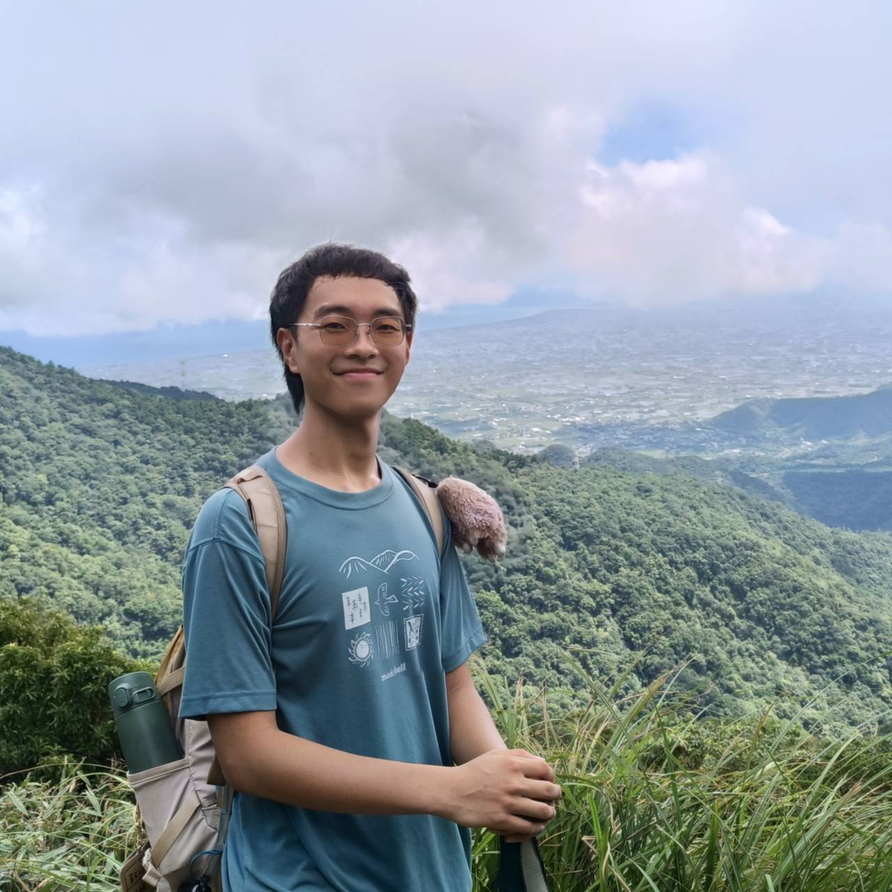

Current Members

Shao-Fang Li (Shawn)
Master Student
- The Impact of Urban Infrastructure on Population Adaptation to Extreme Temperature

Ping Fu
Research Assistant
- On Data Uncertainty of Continental Moisture Tracking
- Wild fire impact on public health in legal Amazonia region

Chen-Wei Ho (Herman)
Research Assistant
- Feeding Growing Cities: Tracing Causal Relationship between Urbanization and Protein Supply.
- Analyzed nutrition transitions across 149 countries (1991–2021), linking socio-economic development to food security. Identified misalignment patterns and highlighted how structural contexts shape nutrition disparities.

Hao-Ren Shiau (Austin)
Bachelor Student
- Not Just Numbers: Water-Based Livelihood in a Deforested Amazonian Landscape

Zi-Feng Chen
Bachelor Student
- If the Century Drought Strikes Again: Assessing Economic Losses, Water Resource Resilience, and Policy Adaptation in Taiwan under Prolonged Drought (NSTC 114-2813-C-002-203-H)
- Heat mortality and urban infrastructure
Mu-Tian Lu (Tiana)
Bachelor Student
- Analyzing the Transformation of Taiwan’s Rice System after 1997 through the Multi-Level Perspective in Transition Studies (NSTC 114-2813-C-002-011-M)
- Research on the Methodology and Applications of TNFD

Yi-An Chen (Timothy)
Bachelor Student
- Wildfire Impacts on Public Health in Brazil
Eru Chiang
Research Assistant
- TNFD & Nature-related Financial Disclosure
- Renewable Energy Transition in Asia
- Environmental Archaeology

Yu-Hsiang Chang
Research Assistant
- Investigating climate impacts of afforestation on albedo effect in Mongolia

Kai-Yuan Cheng (Carrie)
Bachelor Student
- Climate change economics
Alumni
Sabrina Liu
Alumni
- Research Assistant